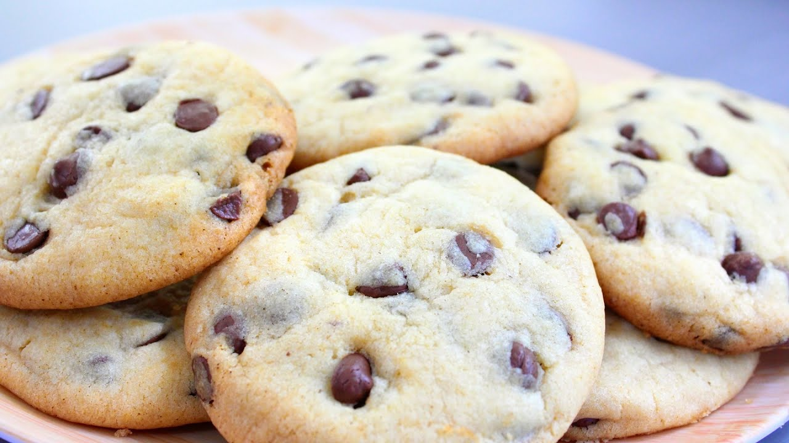

Cookie caseiro

Ingredientes
- meia xícara (chá) de manteiga derretida (100 g)
- meia xícara (chá) de açúcar mascavo
- 3 colheres (sopa) de açúcar
- 1 ovo
- meia colher (chá) de essência de baunilha
- 1 xícara (chá) de farinha de trigo
- meia colher (chá) de fermento em pó
- 100 g de Gotas de Chocolate
Preparo
- Para derreter a manteiga (30 segundos no microondas). Misture a manteiga e o açúcar em uma tigela.
- Adicionar aos ovos à mistura de manteiga-açúcar e misture bem.
- progressivamente Adicione a farinha e o fermento. Misture até obter uma pasta lisa.
- Adicione as gotas de chocolate e espalhe-os na massa.
- Preaqueça o forno a 180 ° C (gás marca 6).
- Em uma assadeira forrada com papel manteiga, faça pequenos montes de massa bem separados (cuidado, a massa
se espalha muito durante o cozimento).
- Asse cerca de 12 minutos.